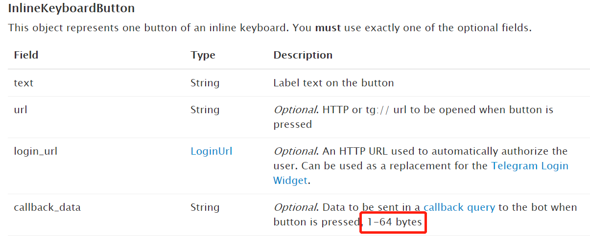

使用 TelegramBot 键盘 InlineKeyboardButton 提示 BUTTON_DATA_INVALID 报错原因分析
今天在测试 telegram Bot 的时候，发现 keyboard 不能正确弹出来，后台查看发现报错了，提示 Bad Request: BUTTON_DATA_INVALID
反复检查代码没有发现语法错误，查找之后了解到 InlineKeyboardButton 响应后返回的 Callback Data 有大小限制，最大64位：

的确我想返回的内容长度的确超过了大小限制，优化源码后问题解决了。
参考链接：
https://core.telegram.org/bots/api#inlinekeyboardbutton
https://stackoverflow.com/questions/46389040/inlinekeyboardbutton-are-limited-in-inlinekeyboardmarkup-telegram-bot-c-sharp